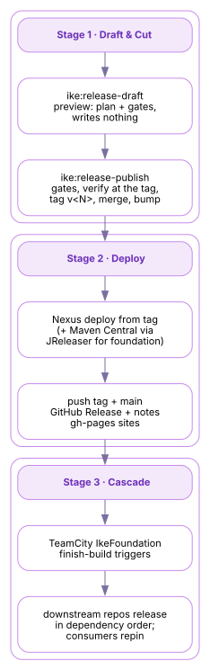

IKE Network
IKE Network 2
-
Home
- IKE Network
The IKE Release Pipeline
A release turns one repository at a SNAPSHOT version into an immutable, signed, published artifact set — tagged in git, deployed to Nexus (and, for the foundation, to Maven Central), announced as a GitHub Release with generated notes. One command, ike:release-publish, runs it; a TeamCity cascade chains releases across the whole foundation in dependency order with one button.
This page explains the machinery end to end: the gates and the local cut, the external deploys, and the CI cascade. It is written for two readers — an operator who needs to cut a release, and an engineer who needs to understand or change how the pipeline works. Each stage closes with a Where the machinery lives note pointing into the source. Its sibling page, the Komet Checkpoint Pipeline[1], covers the other publication path: workspace-wide snapshots that become installers rather than versioned artifacts.
The three stages

| Stage | What happens | Where it runs |
|---|---|---|
| 1 · Draft & Cut | ike:release-draft previews the whole plan without writing; then ike:release-publish runs the gates, builds and verifies the release state, and completes all git work — tag v<N>, merge to main, bump to the next SNAPSHOT — before anything external happens. |
Operator’s machine or CI agent, via the ike plugin (ike-tooling). |
| 2 · Deploy | Artifacts deploy to Nexus from the tag; foundation repos additionally publish to Maven Central through JReleaser. The tag and main are pushed, a GitHub Release is created with a generated changelog, and the project and organization sites deploy to gh-pages. |
Same build, external phase. |
| 3 · Cascade | Downstream repositories release in dependency order — locally via ike:release-cascade, or one-button on TeamCity, where finish-build triggers chain the seven foundation release configurations. |
CI (TeamCity project IkeFoundation, agent kec). |
Stage 1 — Draft, gate, and cut
The goal ships as a draft / publish pair — the same convention used throughout the IKE plugins — so you can preview before you mutate:
-
ike:release-draft - Read-only preview. Resolves the release version, runs the gates, and prints the exact plan — version movement, the reproducible build timestamp, every deploy target, and the point where local work ends and external actions begin — writing nothing.
-
ike:release-publish -
The mutation. It refuses to start unless the gates pass, in order:
- Clean working tree — a release is cut from committed state only.
- Milestone gate — a milestone named
<artifact> v<N>must exist on the issue tracker. Releases are planned events with a place for their issues, never accidents. - Warning-free javadoc — the API documentation builds clean, because it ships with the artifacts.
- Coherence and parent guards — the release coordinates are read from the Maven model itself (group inheritance resolved from the
<parent>block, the version required to be the project’s own), and aSNAPSHOTparent blocks the cut.
The local phase then does all the git work in one deterministic sequence: a release/<N> branch, versions set from SNAPSHOT to <N>, a reproducible project.build.outputTimestamp stamped, 2 references resolved, a full clean verify at the release state, the commit and tag v<N>, source-POM state restored, the merge back to main, and the bump to the next SNAPSHOT.
Everything local completes before anything external starts. A failure in a later stage — a network error at Nexus, a Central validation — never leaves half-published git state: the tag, merge, and version bump are already coherent, and the external phase can be retried from them.
Operator quickstart — from the repository root, secrets injected from 1Password (signing runs in-process; no keys on disk):
# 1. Preview the plan — gates, versions, deploy targets
./mvnw ike:release-draft
# 2. Cut and publish
op run --env-file ~/.config/ike/release.env -- ./mvnw ike:release-publish -BThe public step-by-step how-to, including failure recovery, is Cutting a Release[2] on the ike-platform site. Workspace-scoped releases (a workspace reactor and its subprojects as one train) ride the same engine through the ws:release-draft / ws:release-publish pair.
Module ike-maven-plugin in ike-tooling, package network.ike.plugin.release — one sub-package per phase, run in order: prep, local, coherence, nexus, central, finalize, report.
ReleaseDraftMojo—@Mojo(name = "release-draft"); the read-only plan.ReleasePublishMojo—@Mojo(name = "release-publish"); gates + phases.ReleaseSupportandReleaseNotesSupportin moduleike-workspace-model— the shared release engine: model-based coordinate reading, version movement, and changelog derivation. Thews:workspace release goals consume the same classes.
Repository: IKE-Network/ike-tooling[3].
Stage 2 — Deploy and publish
With the tag cut, the external phase publishes from it:
Nexus — every release deploys to the internal Nexus repositories (SNAPSHOT builds flow there continuously between releases; a release is the immutable point in that stream).
Maven Central — foundation repositories that opt in (<ike.publishToCentral>true</ike.publishToCentral>) additionally publish through JReleaser:
- a signed staging deploy renders the consumer POMs (Maven 4’s model-4.0.0 transformation; the internal
-build.pomis pruned from the bundle); - the generated-BOM swap replaces the stub
ike-bomPOM with the real generated one — resolved<dependencyManagement>, license, developer, and SCM metadata — re-signs it, and verifies the result; - JReleaser validates the bundle with
applyMavenCentralRulesand uploads. The default asynchronous path renders a version-pinned script that runsike:central-stage, so the staging logic is always the releasing plugin’s own, never a stale pin’s.
GitHub — the tag and main are pushed, and a GitHub Release is created whose body comes from the release-notes machinery (ike:release-changelog): entries derived from commit Refs:/Fixes: trailers and the release milestone, so the human-readable "what changed" is generated, not hand-written.
Sites — the project’s Maven site deploys to its gh-pages, and the organization landing at ike.network[4] re-registers the project, so published documentation tracks released reality.
Phases nexus, central, and finalize under network.ike.plugin.release (ike-tooling); ike:central-stage is the version-pinned staging goal the async path invokes. JReleaser and signing configuration are inherited from ike-base-parent[5] — the Tier-0 parent every foundation repository extends. Signing uses the in-process Bouncy Castle signer with secrets injected via op run; no private key material lives on disk.
Stage 3 — The cascade
A foundation release rarely travels alone: downstream repositories pin their upstream versions explicitly (property-indirected pins, moved deliberately — releases roll forward, never republish). Two mechanisms carry a change through the graph:
Locally, ike:release-cascade releases the foundation in dependency order from one command, repinning as it goes.
On CI, TeamCity project IkeFoundation holds seven release configurations on one uniform template (./mvnw -B -ntp ike:release-publish), pinned to agent kec — the signing identity. Finish-build triggers chain them:
BaseParentRelease (manual apex — no trigger) ├─→ JavaSupportRelease ──→ VersionMgmtExtRelease │ └─→ ToolingRelease ──→ DocsRelease ──┐ └─→ WorkspaceExtRelease ────────────────────────────────────┴─→ PlatformRelease
Fire any node and everything downstream auto-releases. The operating rule is trigger the lowest node that covers the change: a build-standards change starts at ToolingRelease; a platform-only change fires PlatformRelease alone.
Each node is an irreversible release — tag, Nexus, and (for opted-in repos) Maven Central. The cascade is one-button by design; the completeness sweep happens before the button, not after.
Announcements ride the same shared notifier the checkpoint pipeline uses: notify-zulip.sh posts progress and a final changelog summary to Zulip, best-effort, never failing a release.
IkeReleaseCascadeMojo(ike:release-cascade) in ike-tooling — the local dependency-ordered cascade.- TeamCity configuration (Kotlin DSL) and
notify-zulip.shin ike-ci[6] (.teamcity/); the release configs regenerate fromscratch/tc/create-foundation-release-configs.py. - The operator-facing CI topology and REST trigger recipes are documented in
release-operations.adocin ike-infrastructure.
Source repositories
| Repository | What it contributes |
|---|---|
| ike-tooling[3] | The ike:release-* goals, the phase engine, Central staging, and the changelog machinery (Stages 1–3). |
| ike-base-parent[5] | Inherited JReleaser + signing configuration (Stage 2). |
| ike-platform[7] | The ws:release-* workspace release train, and the public Cutting a Release[2] how-to (Stage 1). |
| ike-ci[6] | The TeamCity foundation cascade and notify-zulip.sh (Stage 3). |